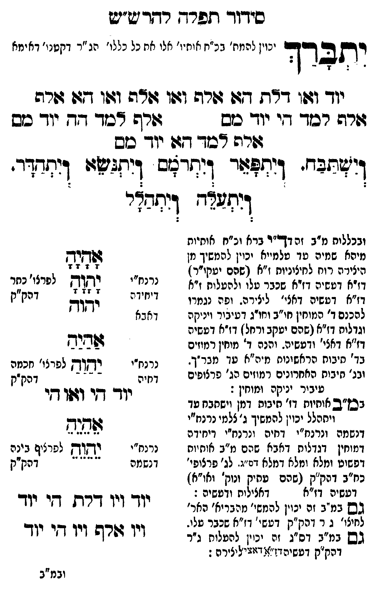

Neue Klartextfassung
יתברך [יכוין להמתיק בכ"ח אותיו' אלו כל כללות הג"ר דקטנות דאימא.] === טבלה === יוד ואו דלת הא אלף ואו אלף ואו הא אלף אלף למד הי יוד מם אלף למד הה יוד מם אלף למד הא יוד מם === סוף טבלה === וישתבח ויתפאר ויתרומם ויתנשא ויתהדר ויתעלה ויתהלל [ובכללות מ"ב דקדיש בכלו וכ"ח אותיות מיהא שמיה עד עלמיא יכוין להמשיך מן היצירה רוח לחיצוניות ז"א (שהם יעו"ר) דז"א דעשיה דז"א שכבר עלו ולהעלות ז"א דז"א דעשיה דכללות ליצירה. וכבר נגמרו ליכנס ד' מוחין מ"ב דחג"ת דעיבור ויניקה וגדלות דז"א (שהם יעקב ורחל) דז"א דעשיה דז"א דאצילות ודעשיה. ויכפי ד' מוחין למוחין בג' תיבות הראשונים מכ"ח עד מברך. ובג' תיבות האחרונים רמוזים הג' פרצופים מעיבור יניקה ומוחין. [?]] [במ"ב אותיות די' תיבות ואמן וישתבח עד ויתהלל יכוין להמשיך ג' צלמי נרנח"י דנשמה ונרנח"י דרוח ונרנח"י דיחידה דמוחין דגדלות דאבא שהם מ"ב אותיות דפשוט ומלא ומלא דמלא דס"ג לג' פרצופי כחב"ד דק"ק (שהם עתיק ונוק' וא"א) דעשיה דז"א דאצילות ודעשיה.] [גם במ"ב זה יכוין להמשיך מהיצירה רוח לחיצוניות ג"ר דק"ק דעשיה דז"א שכבר עלו.] [וגם במ"ב דס"ג זה יכוין להעלות ג"ר דק"ק דעשיה דז"א דאצילות. [?]] === טבלה === [נרנח"י דיחידה; לפרצוף כתר דק"ק] אָהָיָהָ יָהָוָהָ יהוה [נרנח"י דחיה; לפרצוף חכמה דק"ק] אַהַיַהַ יַהַוַהַ יוד הי ואו הי [נרנח"י דנשמה; לפרצוף בינה דק"ק] אֵהֵיֵהֵ יֵהֵוֵהֵ יוד ויו דלת הי יוד ויו אלף ואו הי יוד === סוף טבלה ===
Original gegen neue OCR · Niqqud für Vergleich ausgeblendet
Original
יתברך [יכוין להמתיק בכ"ח אותיו' אלוK173-001 כל כללות הג"ר דקטנות דאימא.] === טבלה ===K173-002 יוד ואו דלת הא אלף ואו אלף ואו הא אלף אלף למד היK173-003 יוד מם אלף למד ההK173-004 יוד מם אלף למד הא יוד מם === סוף טבלה === וישתבח ויתפאר ויתרומם ויתנשא ויתהדר ויתעלה ויתהלל [ובכללותK173-005 מ"ב דקדיש בכלוK173-006 וכ"ח אותיות מיהא שמיה עד עלמיאK173-007 יכוין להמשיך מן ∅K173-008 היצירה רוח לחיצוניות ז"א (שהם יעו"ר)K173-009 דז"א דעשיה דז"א שכבר עלו ולהעלות ז"א דז"א דעשיה דכללותK173-010 ליצירה. וכברK173-011 נגמרו ליכנסK173-012 ד' מוחין מ"ב דחג"תK173-013 דעיבור ויניקהK173-014 וגדלות דז"א (שהם יעקבK173-015 ורחל) דז"א דעשיה דז"א דאצילות ודעשיה. ויכפיK173-016 ד' מוחין למוחין בג' תיבות הראשונים מכ"ח עד מברך.K173-017 ובג' תיבותK173-018 האחרונים רמוזים הג' פרצופים מעיבורK173-019 יניקה ומוחין. ] [במ"ב אותיות די' תיבות ואמן וישתבח עד ויתהללK173-020 יכוין להמשיך ג' צלמיK173-021 נרנח"י ∅K173-022 דנשמה ונרנח"י דרוחK173-023 ונרנח"י דיחידה ∅K173-024 דמוחין דגדלות דאבא שהם מ"ב אותיות ∅K173-025 דפשוט ומלא ומלא דמלא דס"גK173-026 לג' פרצופי כחב"ד דק"קK173-027 (שהם עתיק ונוק' וא"א)K173-028 דעשיה דז"א דאצילות ודעשיה.] [גםK173-029 במ"ב זה יכוין להמשיך מהיצירה רוח לחיצוניות ג"ר דק"ק דעשיהK173-030 דז"א שכבר עלו.] [וגםK173-031 במ"ב דס"ג זה יכוין להעלותK173-032 ג"ר דק"ק דעשיה דז"א דאצילות. ] === טבלה === [נרנח"י דיחידה; לפרצוף כתר דק"ק] אהיה יהוה יהוה [נרנח"י דחיה; לפרצוף חכמה דק"ק] אהיה יהוה יוד הי ואו הי [נרנח"י דנשמה; לפרצוף בינה דק"ק] אהיה יהוה יודK173-033 ויו דלת הי יודK173-034 ויו אלף ואו הי יוד === סוף טבלה ===K173-035
OCR · fehlbar
סידוך תפרח רדר ש"יש 9זכס זפ ינוין למח' גנ"ח וחזי' אלי אחK173-001 כל כלי' הג "ר דקטנו' דא ימא יחברד יוך וזזו דרת דגו שרה וצו וזרה וצו דגו זזרה גורף רכזד דיK173-002 יוד כש (ורה דבוך -דK173-003 יוד כש ורה דכזך דזוK173-004 יוד סש וישתבד- דיתפזךד דיתרצש דיתלטוו דיתדךדר. - 3 - ': ' 6 י - ': ' 6 ץ -- 6 - : - 7 דגחצג דותבדר ובכללותK173-005 מ"ב זה דךי"ר בראK173-006 וכ"ח אותיות מיהא שמיה טך טלמייאK173-007 יכוין להמשיך מן 2233ב ז 74 "ז ' ד' 7K173-008 היצירה רוח לחיצוניות ז"א (שהם יטקי"ר) א זז חשי וזיא"שצנר שלזאזצעל"ן ו"ל נ( גנ(ח יחר נץנK173-009 דז"א דטשיה דאצי'K173-010 ליצירה. ופהK173-011 נגמרו ד"יז"דה לל דהק"ק להכנםK173-012 ד' המוחין חי"ב וחו"גK173-013 דעיבור וינקה דאבא ) זK173-014 וגדלות דז"א (שהם יטקבK173-015 ורחל) דז"א דעשיה דז"א דאצי' ודטשיה. והנהK173-016 ד' מוחין רמוזים פגיר בד' חיבוח הראשונות מ"ה"א עך מבר"ך. נרנח"י יץןךן לפרצו' חכמהK173-017 ובג' חיבותK173-018 האחרונים רמוזים הג' פרצופים דקיה -"-' - דע] זק עיבירK173-019 יניקה ומוחין : ל ו ו בבז"ב אוחיוח דז' חיבות דמן וישחבח טד וד די וזו ד ויחהללK173-020 יכוין להמשיך ג"צלמיK173-021 נרנח"י -K173-022 דנשמה ונרנח"י דחיהK173-023 ונרנח"י דיחידה 1454K173-024 דמוחין דגדלות דאבא שהם מ"ב אותיות נרנח"י וחוק לפרציף בינהK173-025 דפשוט ומלא ומלא דמלא דמ"נ.K173-026 לג' פרצופי' דנשמה -) ' --- דהק"ק כח"ב דהק"קK173-027 (שהם עתיק ונוק' ואו"א]K173-028 דעשיה דז"א דאלילוח ודטשיה : (ו- דו ו ו גשK173-029 במ"ב זה ינוין להמשי' מרבריא' האר' וך ויו דרח די יוד לחיצו' ג ר דהק"ק דעשי'K173-030 דז"א שכבר טלי. ו וו גו ו גשK173-031 במ"ב דס"ג זה יכוין להעלוחK173-032 ג"ר ∅K173-033 ויו דורשK173-034 ויו די יוך דהק"ק דטשיהד:'): דזושיליצירה: ובמ"בK173-035